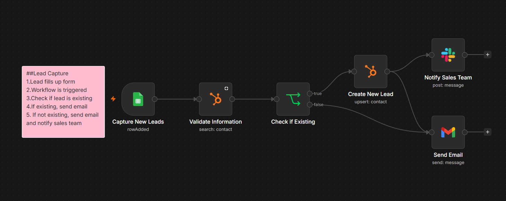

Demo Project
FROM MANUAL HANDOFFS TO CONNECTED STEPS
Automations
Connecting lead capture, contact checks, and follow-up actions.
01AUTOMATE
Lead Capture Workflow
Lead Capture & Follow-up
- Workflow design
- Conditional routing
- Tool integration

FROMSeparate steps for checking contacts and sending updates.
TOA connected workflow that routes leads to contact, email, and notification actions.
THE RESULT